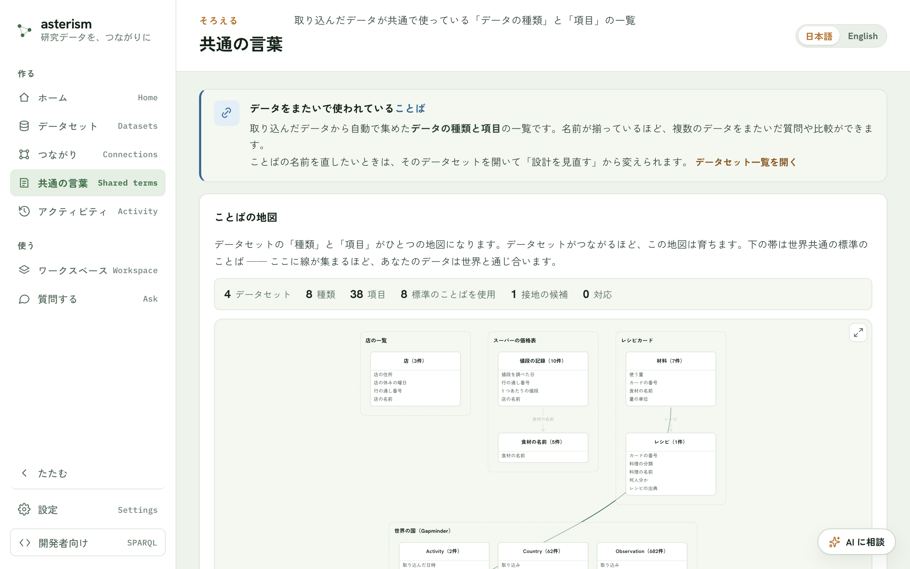

共通の言葉 — ことばを揃える・標準に合わせる
共通の言葉とは
取り込んだデータが使っている「データの種類」と「項目」の一覧を、共通の言葉と呼びます。複数のデータセットで名前が揃っているほど、データをまたいだ質問や比較ができるようになります。
入口
メニューの「共通の言葉」から、ことばの地図と、いま使われていることばの一覧を見られます。


ことばの地図 v0.40.0 (2026-09-02) で追加
ページの最初に「ことばの地図」が表示されます。データセットがつながるほど、この地図は育ちます。見せかたは「全体」（はじめの表示）と「詳しく」の 2 つで、次の「「全体」と「詳しく」」で違いを説明します。以下の線の説明と集計は、おもに「詳しく」の表示のものです。
「詳しく」では、設計のあるデータセットの「種類」（箱）と「項目」（箱の中）をひとつの図に重ねます。箱を押すと、そのデータセットの詳細ページに移動します。図の下の帯は標準のことば（世界共通の語彙）です。線は 4 種類あります。
- 灰色の実線 — データの中のつながり（種類どうしの関係）
- 緑の実線 — 標準のことばを使っている（確定）
- 琥珀の点線 — 接地の候補（名前がほぼ一致する標準のことば。まだ確定していません。候補は一覧から機械的に探すもので、AI は使いません）
- 青の点線 — データセット間の対応（「視点をつなぐ」で確定したもの）
なお、琥珀の点線は「詳しく」の接地の候補だけです。「全体」では、標準のことばを使っている（確定）線を琥珀の実線（細め）で描きます。
図の上の集計（データセット・種類・項目・標準のことばを使用・接地の候補・対応）は、同じ内容を数字で表したものです。「全体」のときの集計は、全体図に描いたもの（データセット・種類・つながり・標準のことば・種類の件数の合計）だけを数えます。
「全体」と「詳しく」 v0.51.0 (2026-10-07) で追加
地図の上の「全体 ／ 詳しく」で見せかたを切り替えられます。はじめは「全体」です（選んだほうは次に開くときも覚えています）。

- 全体 — 種類を丸で描きます。丸が大きいほど、その種類のものが多く入っています。大きさは、いま図に出ている丸の中での比べです（図が変わると、同じ件数でも大きさが変わります）。件数は大きい丸なら丸の中に短く（「120万」など）、小さい丸なら名前の下に「820 件」と出ます。マウスを載せると正確な数が出ます。丸はデータセットの枠の中に並び、真ん中の丸は複数のデータセットをつなぐ「つながり」です。種類からつながりへ線が伸びます。標準のことばは下の帯です。線は、間にある別の丸やその名前に重ならないよう、曲がることがあります。項目までは描きません。
- データセットが多いとき（7 つ以上、または種類が合わせて 41 以上のとき）は、丸が種類ではなくデータセットになります。丸の大きさは種類の件数の合計（図の中での比べ）で、件数は丸の中に、名前の下には「N 種類」と出ます（小さい丸は名前の下に「N 種類・M 件」）。真ん中の帯が「つながり」で、データセットはその上と下に並びます。線はデータセットからつながりへ 1 本ずつ（線に載せると「N 種類が参加」と出ます）。

- その丸（またはつながり）を押すと、その周りだけが種類の丸で開きます。ほかのデータセットは、つながりに参加している種類だけが出て、枠に「ほか N 種類」と書かれます。参加者が多いときは、上の帯に「ほか N 個のデータセットは省いています」と出て、数の多い順に一部だけが描かれます。上の「全体に戻る」を押すと元の図に戻ります。

- 丸やつながりにマウスを載せると、そこにつながる線が濃くなり、ほかの線は薄くなります。
- 詳しく — 種類を箱で描き、箱の中に項目を並べます。項目が標準のことばに合っているか（使っている・候補・対応）まで見られます。
どちらの表示も、右上のボタンで窓いっぱいに広げて見られます（広げた中ではホイールで拡大縮小・Esc で戻る）。
「全体」（データセットが少ないとき、または周りを開いたとき）で丸を押すとその種類のページ、枠の名前のあたりを押すとそのデータセット、真ん中のつながりの丸を押すと「つながり」の画面に移ります。「全体」の線は、灰の実線がデータの中のつながり、青い実線がつながりへの参加、琥珀の実線が標準のことばを使っている種類、青の点線がデータセット間の対応です。
一覧の見方
一覧に並ぶのは、いま使われていることばです。データの種類は件数（その種類のものが何件あるか）、項目は使用回数で表示されます。数えるのは公開済みのデータだけです。公開前の下書きは含まれず、公開すると集計に入ります。
それぞれのことばには、そのことばを使っているデータセットの一覧も付きます。
ことばの名前を直す
ことばの名前を直したいときは、そのデータセットを開いて「設計を見直す」ボタンから変更できます。複数のデータセットが共通で使うことばは、名前を変えるとそれを使うすべてのデータの検索・回答に影響するので注意してください。
標準のことばに合わせる（任意） v0.5.0 (2026-06-15) で追加
自分のデータ専用のことばを、よく使われる標準のことば（QUDT・schema.orgなど）に結びつけることができます。合わせておくと、他のデータと自動でつながり、外部のツールや AI もそのまま理解できます。合わせるかどうかは任意で、合わせなくても検索・引用はそのまま使えます。
合わせ方
データセットの「中身」タブを開き、候補から選びます。候補は標準のことばの一覧から機械的に探すもので、AI は使いません。英語のふつうの言い方（例: temperature, crystal structure）でも検索できます。合わせたい候補が見つかったら「この標準に合わせる」ボタンで確定します。あとから解除することもできます。
この列は何を測っているか v0.17.5 (2026-08-21) で追加
項目名を標準に合わせるのとは別に、「この列は何を測っているか」という問いにも合わせられます。単位が手がかりになるので、項目名が略記でも見つかることがあります。合わせておくと、「熱伝導率を測った人」のようにデータをまたいで横断的に探せるようになります。
すでに使われている標準
データの中ですでに使われていた、よく知られた標準のことばは、自動で検出されて一覧に表示されます。あらためて合わせる操作をしなくても、最初から標準に沿っている場合はそのまま表示されます。
関連
- データどうしをつなぐ話は crosswalk.md を参照してください。
- 公開の流れは getting-started.md を参照してください。